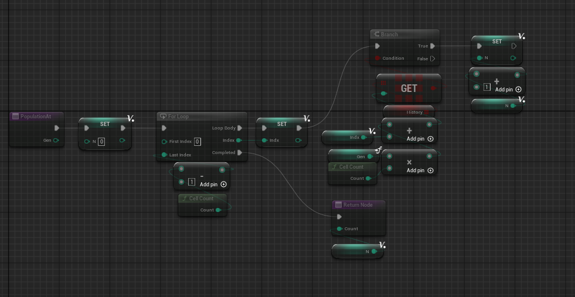
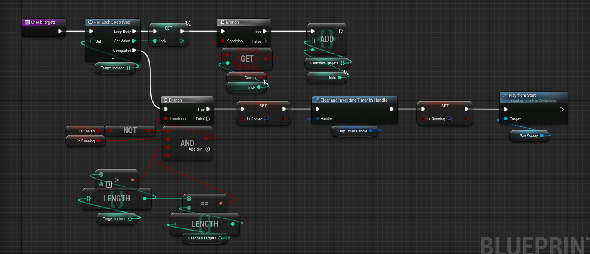
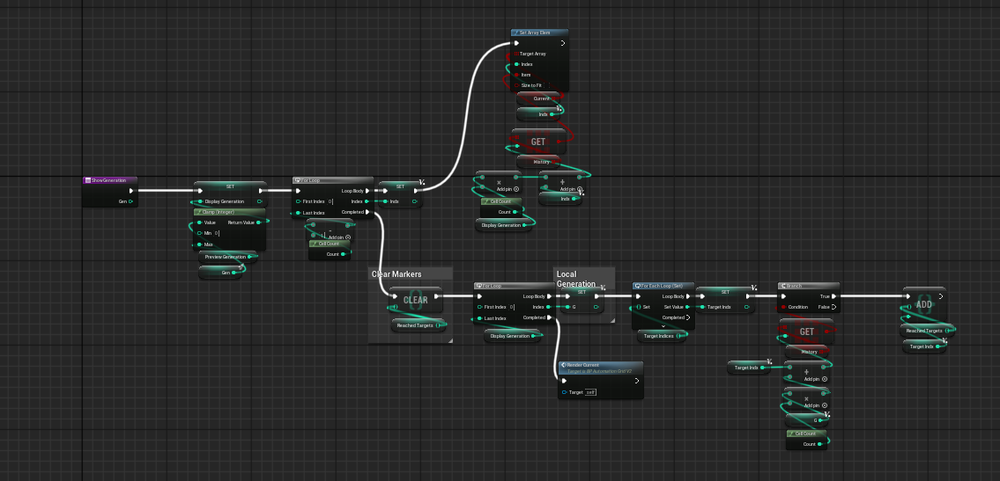
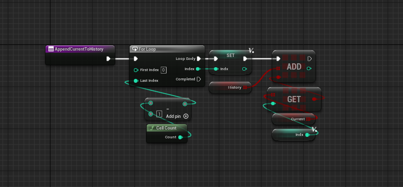
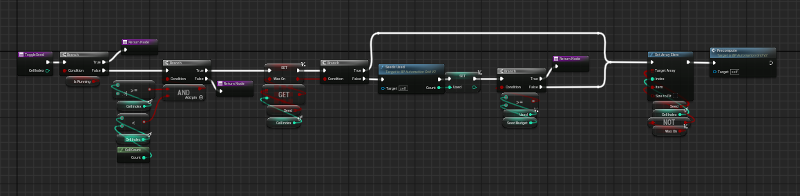
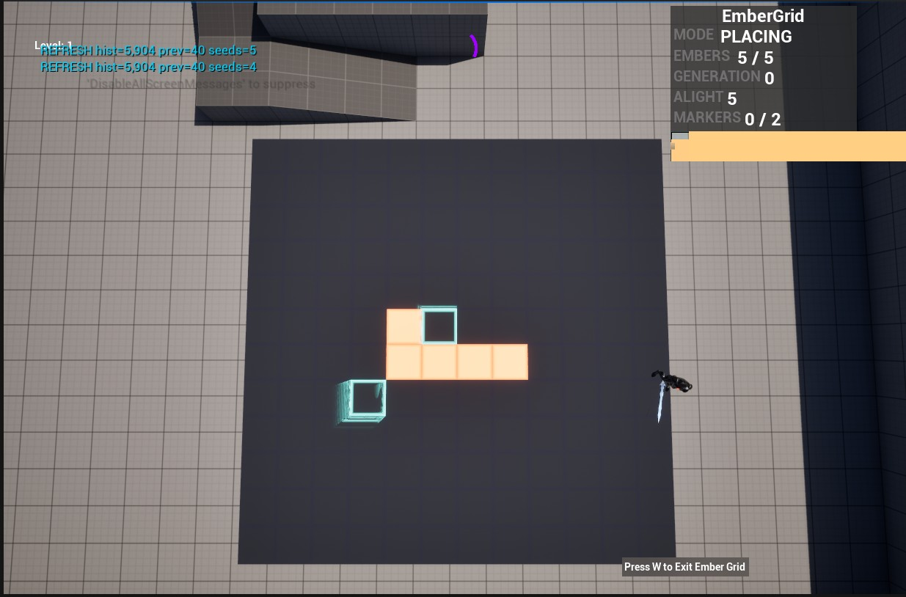
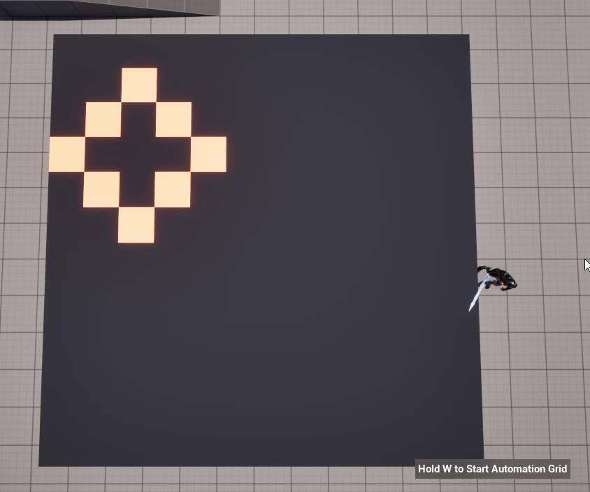
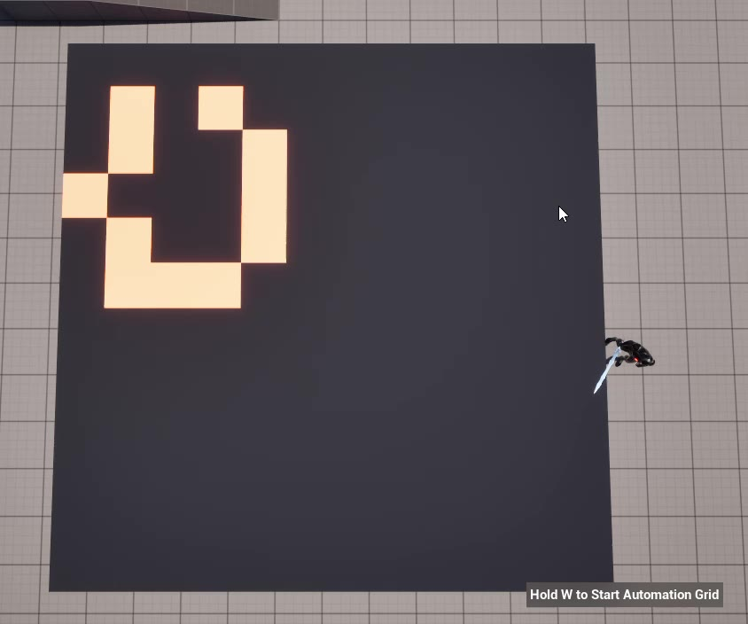

// 01
Purpose
Automation Grid is a Conway's-Game-of-Life-style puzzle: the player places a limited number of live cells on a 12×12 board, and those cells evolve on their own from there. The puzzle only works if the player can see what a seed will do before committing to it — that meant the simulation had to be pure and fully precomputable, so the design constraint and the architecture constraint turned out to be the same constraint. The scrub bar that lets a player step back and forth through a seed's entire future isn't a UI feature bolted onto the automaton — it's only possible because the simulation is cheap and deterministic enough to run in full on every single input.
Everything below traces back to one rule I wrote down early and kept enforcing whenever something broke:
Seed is authored. History is derived. Current is a window into History. Anything that mutates the seed triggers a full re-simulation. Nothing else writes the board.
Nearly every bug in this project traced back to a violation of that rule — a function writing Current directly, or derived marker state accumulating instead of rebuilding. Finding the invariant that made the system tractable, and learning to recognize bugs as breaches of it, was the actual engineering work here.
// 02
Implementation
Built entirely in Blueprint, chosen to iterate on the puzzle design quickly. The decisions below are structural — they'd hold in any language.
-
Grid Population Helper A small pure function that counts live cells for a given generation by looping the flat cell array and running
CellCountagainst it. Used anywhere the simulation needs to know how full a generation is without touching rendering or history state.
PopulationAt() -
Board Setup on Begin Play
Event BeginPlaycallsInit Gridto allocate the flat cell array and Instanced Static Mesh, thenReset to Seedto load the authored starting pattern. Splitting allocation from seeding keeps "build the board" and "populate the board" as two testable steps instead of one. BeginPlay
BeginPlay
-
Step Reads Current, Writes Next
Stepreads theCurrentbuffer and writes results into a separateNextbuffer, swapping only once every cell has been evaluated. Reading and writing the same buffer would make the result depend on iteration order — a glider would smear instead of translate. One extra buffer is the correctness requirement for the whole simulation, thenAdvanceStepchains into re-rendering and a target check. AdvanceStep
AdvanceStep
-
Win Detection & Timer Teardown Loops the target indices, checks each against the live cell set, and once every target is reached and the simulation isn't already solved, clears and invalidates the step timer by handle and plays the win Timeline. The solved/running guard (
NOT Is Solved AND Is Running) exists so the win state fires exactly once, not once per remaining generation.
CheckTargets() -
Rebuild Derived State, Never Accumulate It Scrubbing to a generation clears every marker and recomputes
Reached Targetsfrom generation 0 up to the displayed generation, then re-renders. Accumulating markers instead would be cheaper and work perfectly right up until the player scrubs backward, at which point markers stay lit for events that haven't happened yet at that point in time. The full rebuild is trivial at this board size and correct in both directions.
ShowGeneration() -
Flat History Buffer Blueprint can't nest containers, so the timeline is one flat array indexed by
History[gen * CellCount + i]rather than an array-of-arrays — a constraint that pushed toward the layout I'd choose anyway. Every generation the simulation computes gets appended here once, which is what makes scrubbing a read against existing data instead of a re-simulation.
AppendToHistory -
Budgeted Seed Authoring Clicking a cell while editing toggles it in the
Seedarray against aSeed Budget, tracking how many placements areUsedso the player can't overspend. Any successful toggle writes the seed and triggersPrecompute— a full re-simulation from generation 0 — because per the invariant, nothing downstream of the seed is allowed to be patched instead of rebuilt.
ToggleSeed() -
One Instanced Static Mesh, One Draw Call All 144 tiles are a single Instanced Static Mesh; per-instance custom data carries state and the material does the interpretation. Slot 0 carries alive/dead, written every render. Slot 2 carries marker type. Slot 3 carries each tile's normalized distance from center, written once at init — it's what drives the radial win-sweep and ripple effects, so the CPU never recomputes a per-tile distance and the whole effect is two scalar parameters animating against geometry the material already knows.
// 03
Impact
A full Precompute is 40 generations × 144 cells × 9 neighbor reads — roughly 52,000 operations per seed placement, comfortably inside a frame in the Blueprint VM. That number is the justification for the whole design: because a full re-simulation is cheap at this board size, the project never needed incremental updates, cached partials, or dirty-region tracking. Every click just reruns everything.
144
Cells — 12×12 Grid
40
Generations Precomputed / Seed
~52K
Ops per Seed Placement
1
Draw Call, Full Board
// 04
Media Gallery
Gameplay

A generation mid-spread across the board
Authored seed, pre-simulation
A few generations laterBlueprint Reference
// 05
Takeaway
The trap in explaining this project is starting with Conway's Game of Life — everyone already knows Conway's Game of Life. The better way in is the problem it's actually solving:
The puzzle only works if the player can see what a seed will do before committing to it. That meant the simulation had to be pure and fully precomputable — so the design constraint and the architecture constraint turned out to be the same constraint.
From there, the custom-data rendering, the flat history buffer, and the derived-state rebuild in ShowGeneration all hold up to follow-up questions, because I've debugged every one of them deeply enough to go three levels down. Almost every bug I hit came from breaking the same rule in a new way — something writing the board directly instead of going through the seed, or something accumulating state that should have been rebuilt.
This is a Blueprint implementation, and I chose Blueprint specifically to iterate on the puzzle design quickly. That's a legitimate answer on its own — the interesting decisions here are structural ones about state and data flow, and they'd be exactly the same decisions in any language.